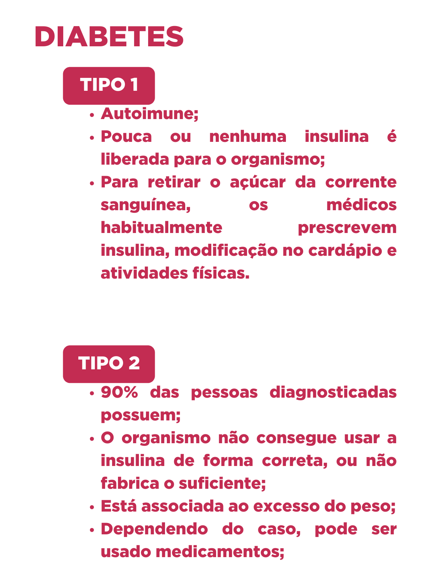
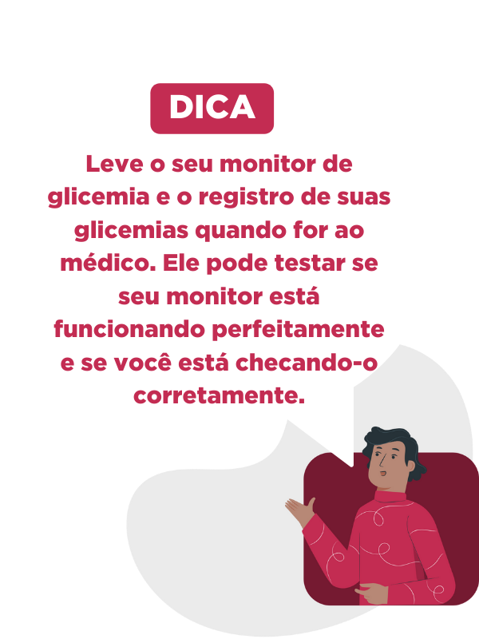

O que é diabetes?
É uma doença caracterizada pela elevação da glicose no sangue (hiperglicemia). Pode ocorrer devido a
defeitos na secreção ou na ação do hormônio insulina, que é produzido no pâncreas.

Qual a função da insulina?
A função da insulina é promover a entrada de glicose para as células do organismo de forma que ela possa
ser aproveitada para as diversas atividades celulares.
A ausência da insulina ou um defeito na sua ação resulta, portanto, em acúmulo de glicose no sangue, o que
chamamos de hiperglicemia.
Como diagnosticar?
Exame de rotina
Para realizar o diagnóstico, basta fazer um exame de sangue tirando apenas uma gota do seu sangue e já é
possível saber se há alguma alteração na taxa de glicemia.
Diagnóstico
Caso a alteração seja considerável, será necessária a realização de outros exames, mais aprofundados. Para
ter certeza do resultado e começar o tratamento, o médico deve solicitar o teste oral de tolerância à glicose,
mais conhecido como Curva Glicêmica.
O exame é feito em diversas etapas, em que são coletadas amostras de sangue em um tempo determinado,
geralmente de 30 em 30 minutos. Nos intervalos, o paciente deve ingerir um xarope de glicose.
Como tratar?
O principal é controlar o nível de glicose no sangue, para evitar complicações.
A medição pode ser feita por meio de um monitor de glicemia ou por bombas de insulina que devem ser
adquiridos e usados com orientação da equipe multidisciplinar.
Deve-se seguir as orientações para que a medição seja feita nos horários corretos, nas situações e na
frequência ideal. Com esses dados, é possível tomar as melhores decisões.
A glicemia normal em jejum não deverá ultrapassar os 100 mg/dL;
Se o resultado ultrapassar 126mg/dL, com certeza é diabetes;
Duas horas após uma refeição, a glicemia não deverá ultrapassar 140 mg/dL.
